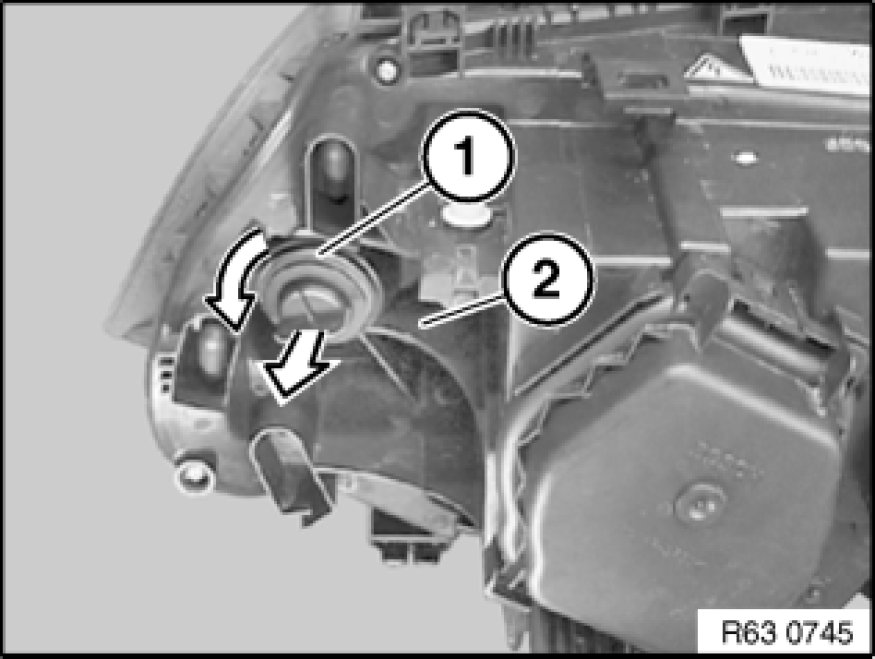
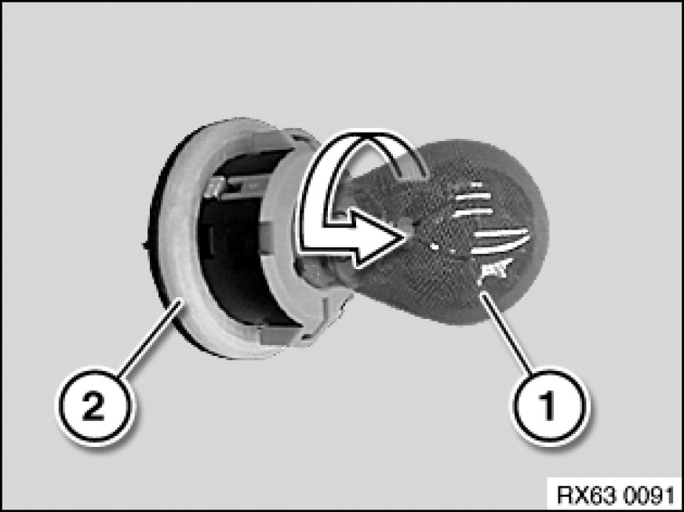
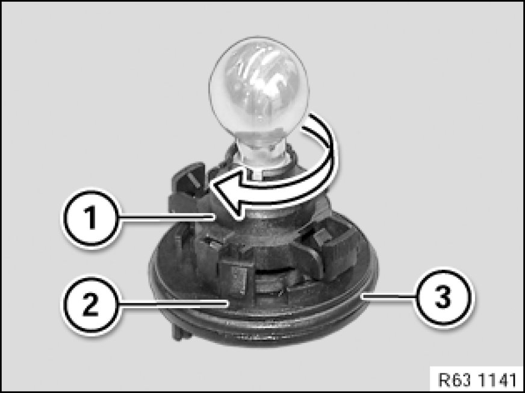

Replacing Bulb for Turn Indicator, Front Left
63 99 273 - Replacing bulb for turn indicator, front left

Warning!
Version with xenon headlights: Danger to life due to high voltage! Therefore, before removing, disconnect all components from the power supply (lighting system and ignition off).
Work on the entire xenon lighting system (control unit, ignition unit with bulb) may only be carried out by specialist personnel.
Follow instructions for handling light bulbs (exterior lights) Instructions for Handling Light Bulbs (Exterior Lights).

Note:
Headlight (2) removed for purposes of clarity.
Turn bulb holder for direction indicator (1) in counterclockwise direction and pull in direction of arrow out of headlight (2).

Build date up to 09/06:
Twist bulb for front direction indicator (1) in direction of arrow out of direction indicator bulb holder (2).

Build date after 09/06:
Twist bulb for front direction indicator (1) in direction of arrow and remove from direction indicator bulb holder (2).
Installation Note:
Make sure bulb for front direction indicator (1) and sealing ring (3) are correctly seated on direction indicator bulb holder (2).

Installation Note:
Note type of bulb [1][2]Specifications.